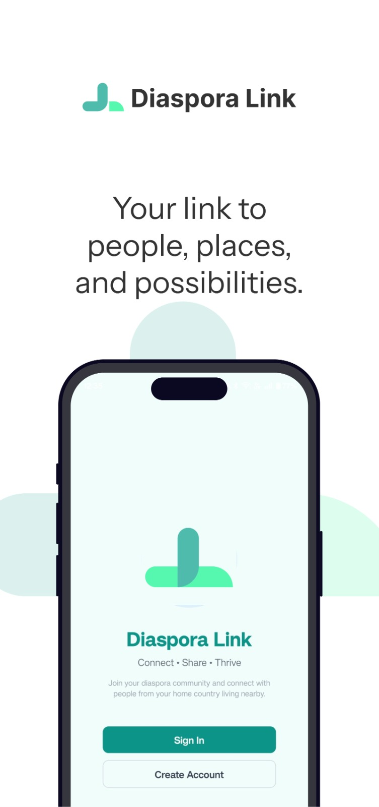
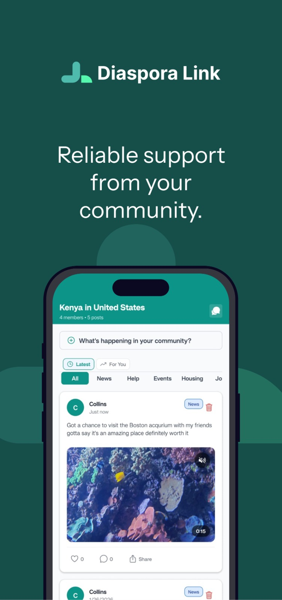
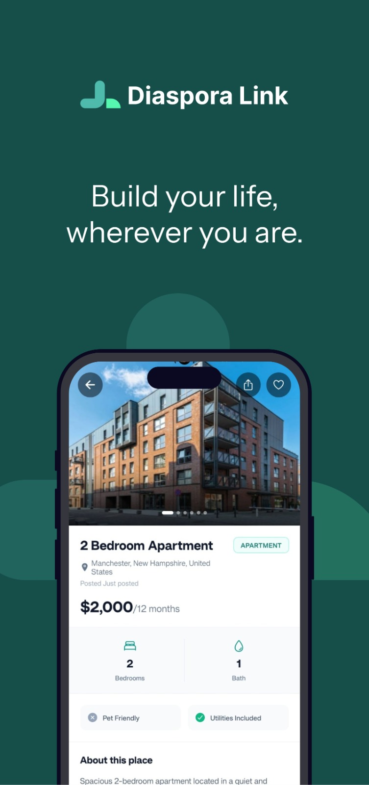
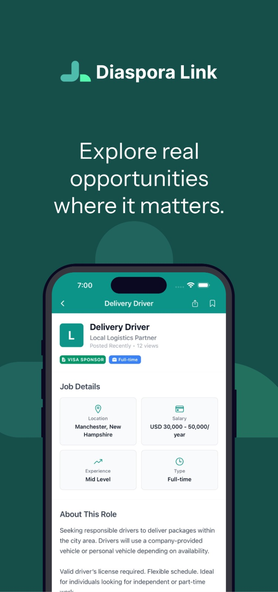
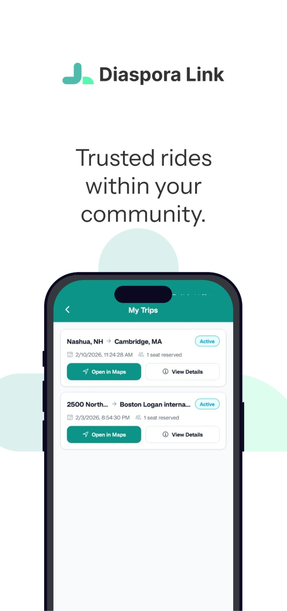

Mobile · Founder and sole engineer
Diaspora Link
A community and marketplace app for people living abroad. Feed, encrypted messaging, group calls, savings circles, marketplace, housing, jobs and rides, organised around your national community. Live on the App Store and Google Play.
Why
When you move to a new country everything is harder: finding a room, finding work, getting to the airport, finding people who understand you. That life ends up scattered across WhatsApp groups, Facebook groups and word of mouth. I lived it when I arrived in New Hampshire.
Diaspora Link puts it in one place. Users join a national community, for example Kenyans in the United States, and cities inside it get their own group chats. Everything else in the app hangs off that spine.
What is in the app
- Community feed and reels. Posts with up to ten photos and video, likes, comments and reposts, plus a vertical short-video feed tuned for low-end phones and slow networks.
- Encrypted messaging. Private one-to-one and group chats, end-to-end encrypted with Virgil E3Kit.
- Voice and video calls. Free one-to-one calls and group calls for up to 32 people on LiveKit, with ring-the-group and join-late from the chat.
- Ziganya savings circles. Digital chama: contributions, rotations, loans, records and group meetings inside the app.
- Marketplace. Buy from diaspora-owned stores with Stripe checkout. Sellers get a web dashboard with live orders, catalogue tools, analytics and payouts.
- Life logistics. Housing listings with video tours and roommate matching, jobs with applications and resumes, community ride-sharing, and daily-refreshed scholarships.
- Kazi and Harambee. Newer surfaces for gigs and task bidding with escrow, and zero-commission community fundraisers.
- Five languages. English, Swahili, Spanish, French and Lingala, notifications included.
Screenshots





How it is built
The client is Expo SDK 54 on React Native 0.81 with Expo Router, TypeScript, Zustand, React Hook Form and Zod. Builds ship through EAS with over-the-air updates for fixes between store releases.
The backend is Firebase: Auth, Firestore, Realtime Database for chat metadata, Storage, and around thirty Cloud Functions modules covering content moderation triggers, ride status and seat management, Ziganya autopay and elections, scholarship digests, video transcoding, referrals and admin audit logging. App Check protects the callable functions. Push goes through Expo and Notifee, email through SendGrid.
Payments run on Stripe today, with M-Pesa via Daraja planned for the Kenyan side. Calls use LiveKit with a signalling layer in Functions. The repo has Jest unit and integration tests, Husky hooks and CI, and a web build is in progress on Firebase Hosting with a laptop-width shell and Stripe.js for payments.
Demo
What I learned
Shipping to two app stores and keeping users on both is a different job from building features. Release checklists, crash-free rates, security rules, rate limits and moderation all became my problem, and most of my growth as an engineer over the last year came from owning them.